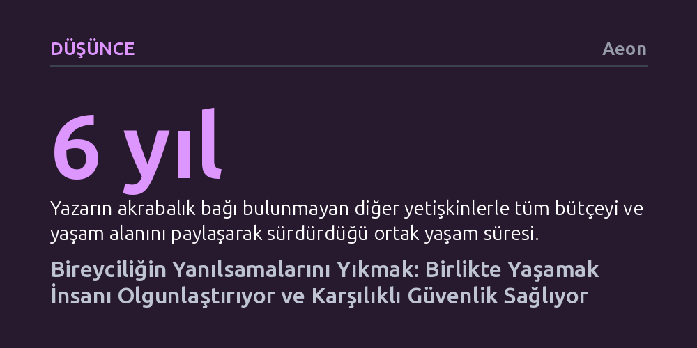

DUSUNCE · Aeon · 2026-10-23
Modern bireyciliğin dayattığı konfor ve yalıtılmışlık insanı yalnızlaştırırken, akraba olunmayan kişilerle paylaşılan komünal yaşam benlik yanılsamalarını yıkarak gerçek bir olgunlaşma sağlıyor. Altı yıllık ortak ev deneyimi, kırılganlıkları gizlemeden kurulan karşılıklı bağlılığın krizler karşısında asıl güvenliği oluşturduğunu gösteriyor.
Güvenlik ve huzurun daha fazla kişisel alan, mülkiyet ve yalıtımla değil; başkalarıyla paylaşılan, zahmetli ama dönüştürücü bir karşılıklılık ilişkisiyle inşa edilebileceğini fark ettirir.

Modern toplumun bireylere sunduğu başarı reçetesi oldukça belirgindir: İyi bir eğitim almak, prestijli bir işe girmek, bir hayat arkadaşı bulmak ve nihayetinde şehirden biraz daha uzakta, daha geniş mutfaklı, bahçeli müstakil bir eve çekilmek. Çekirdek ailenin dışındaki yetişkinlerle aynı evi paylaşmak ise genellikle öğrencilik yıllarına veya düşük gelirli dönemlere özgü geçici bir mecburiyet gibi algılanır. Ancak bu kontrol, mahremiyet ve konfor vaadi, beraberinde derin bir izolasyon getiriyor. Yazar, bir düşünce kuruluşunda toplumsal politikalar üzerine çalışırken karşılaştığı yalnızlık, ruh sağlığı sorunları, bakım krizi ve iklim endişesi gibi pek çok meselenin kökeninde aynı görünmez dinamiğin yattığını fark etti: Birbirimize katlanma, alanımızı ve kendimizi paylaşma becerimizi kaybetmiş olmamız.
İlk çocuğunun doğumuyla birlikte ekolojik kriz ve geleceğe dair kaygılar soyut birer politika başlığı olmaktan çıkıp somut bir varoluşsal tehdide dönüştü. Çocuğunu sadece bireysel birikimle ve kapalı kapılar ardında koruyamayacağını anlayan yazar, modern bireyciliğin özerklik karşılığında hafifleyen varoluş pazarlığına başkaldırmaya karar verdi. Londra'da bir dizi hazırlık, bürokratik engeller ve deneme süreçlerinin ardından, kan bağı bulunmayan diğer yetişkinler ve çocuklarla ortaklaşa bir mülk satın alarak aynı çatı altında geniş bir hane kurdular.
Hane sakinleri yalnızca yatak odalarını kendilerine ayırıp mutfak, oturma odası ve banyo gibi tüm ortak alanları birlikte kullanıyor. Bütçelerini büyük oranda havuza aktarıyor, alışverişi, yemek pişirmeyi ve çocuk bakımını paylaşıyor, yılda yüzlerce misafir ağırlıyorlar. Evin oturma odasında gerçekleşen ve sekizinci ev sakininin dünyaya geldiği evde doğum tecrübesi, bu birlikteliğin beden sıvılarına kadar varan dolaysızlığını simgeliyor. Sağlık görevlileri, çocuklar, ev arkadaşları ve akrabaların bir arada bulunduğu bu anlar, modern çekirdek ailenin sterilize edilmiş sınırlarını tamamen ortadan kaldırıyor.
Elbette bu yakınlık romantik bir hayalden ibaret değil; günlük hayat kaçınılmaz sürtünmelerle dolu. Kimin bulaşık makinesini boşaltacağı, mutfak tezgahındaki kırıntılar, buzdolabındaki süt, banyo sıraları veya ses yalıtımı gibi küçük meseleler sürekli gerilim yaratabiliyor. Yazar, bu çatışmaların aslında daha derin soruları maskelediğini belirtiyor: Ben kime aidim, nerede gerçekten kendim olabilirim ve bu insanların yanında kime dönüşüyorum? Çatışma ve onarım döngüleri sayesinde, taraflar en savunmasız ve kusurlu hallerini birbirlerine göstermelerine rağmen kaçıp gitmemeyi öğreniyorlar.
Popüler kişisel gelişim kültürü, bireye sürekli kendi içine dönmesini, sınırlarını kalınlaştırmasını ve otantik benliğini tek başına inşa etmesini salık verir. Oysa ortak yaşam, bu korunaklı yanılsamaların ilk çöktüğü yerdir. Yazar, manastır geleneklerine benzer şekilde, insanın kendi bencilliğiyle, sabırsızlığıyla ve haklı çıkma arzusuyla ancak başkalarının sürekli ve filtrelenmemiş tanıklığında yüzleşebileceğini savunuyor. Kendimizi korumak için taktığımız sosyal maskelerin düştüğü bu alan, kişiyi gerçek anlamda olgunlaşmaya zorluyor.
Nörobiyoloji de bu tecrübeyi destekliyor. Psikiyatrist Dan Siegel ve nöropsikolog Allan Schore'un çalışmalarına atıfta bulunan yazar, insanın kapalı ve rasyonel bir sistem değil, başkalarının bakışıyla sürekli biçimlenen açık ve dinamik bir yapı olduğunu vurguluyor. Bebeklerin beyin gelişimi nasıl yüz yüze temas ve karşılıklı etkileşimle şekilleniyorsa, yetişkinler de birbirlerinin zihnini ve gerçeklik algısını inşa etmeye devam ediyor. Yalnızlık sanrıları beslerken, diğer insanlarla kurulan sıkı ilişkisel ağlar dünyayı daha sağlıklı algılamamızı sağlıyor; yazar bu süreci insanların birbirlerinin ses ve yüzleriyle yön bulduğu bir tür ekolokasyona benzetiyor.
Komünal yaşamın sunduğu tüm bu faydalara rağmen yazar, bunu herkes için kolay bir reçete olarak pazarlamaktan kaçınıyor. İpotek mevzuatından imar yasalarına kadar pek çok sistemik engel insanları ayrı tutmaya ayarlı olduğu gibi, modern insanın bireyci terbiyesi de böylesi bir fedakarlığa hazır değil. Ayrıca sırf komün kurmuş olmak için bir araya gelmek uzun vadede sürdürülebilir olmuyor. Yazar, komünlerin dağılmaması için bireysel çıkarların ötesine geçen, ortak bir iyilik tasavvuruna dayanan güçlü bir amaca ihtiyaç duyulduğunu ifade ediyor; onların deneyiminde bu tutkalı Hristiyanlığın komşuyu sevme ve birlikte dua etme öğretisi sağlıyor.
Sonuç olarak bu yaşam tarzı bireysel özerkliği tamamen yok etmeyi değil, onu dayanışmayla dengelemeyi hedefliyor. Hane halkı manastırlardaki gibi ömür boyu değil, beşer yıllık taahhütlerle ilerliyor ve olası ayrılık ihtimallerini gerçekçi bir biçimde konuşuyor. Yaklaşan ekolojik ve teknolojik sarsıntılar karşısında bireysel birikimin bir koruma kalkanı olamayacağını hatırlatan yazar, gelecekte ayakta kalabilmek için birbirimize sığınmayı ve birbirimizin güvenliği olmayı yeniden öğrenmemiz gerektiğini savunuyor.